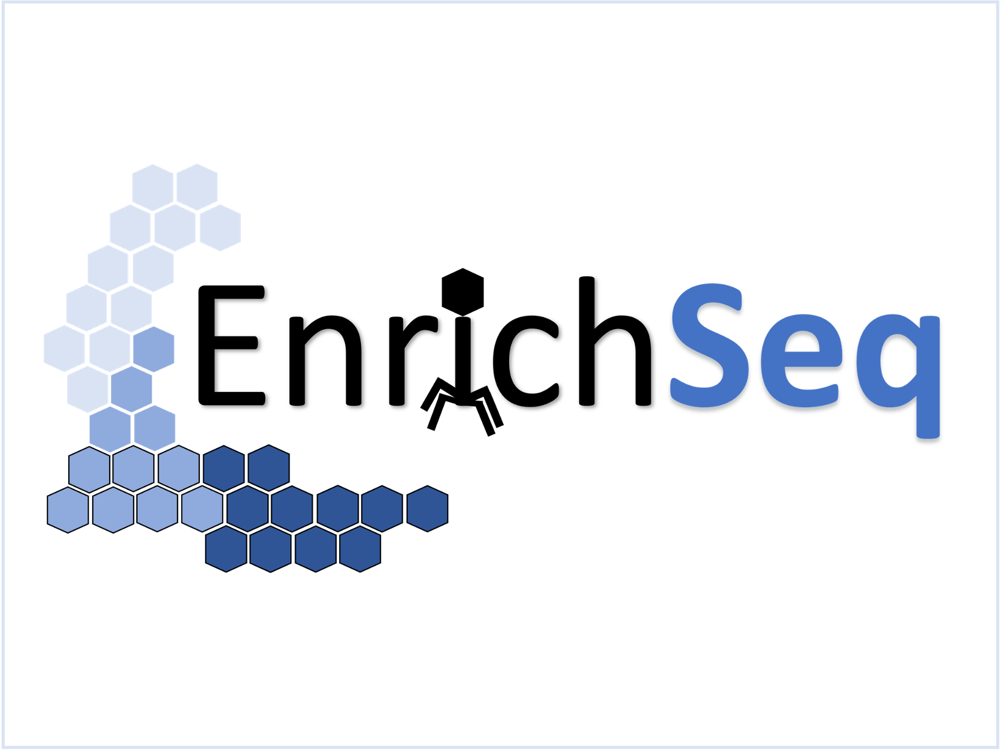
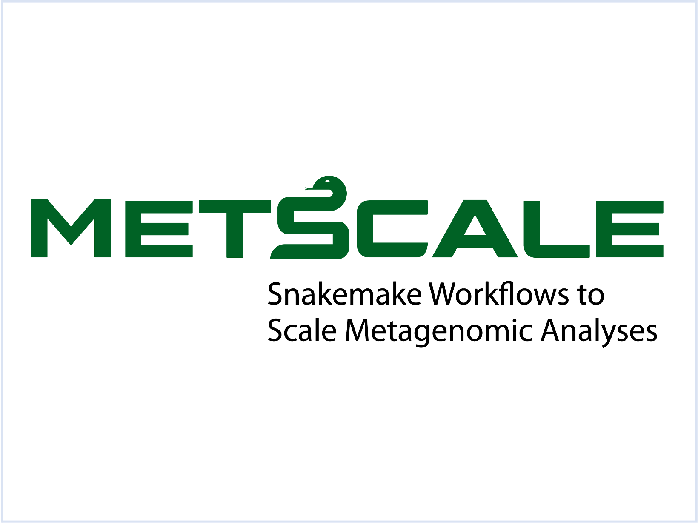
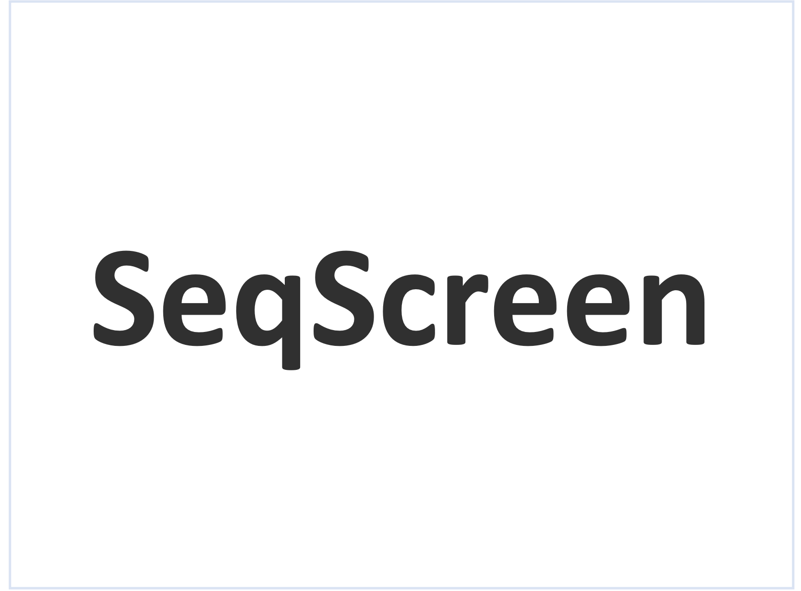
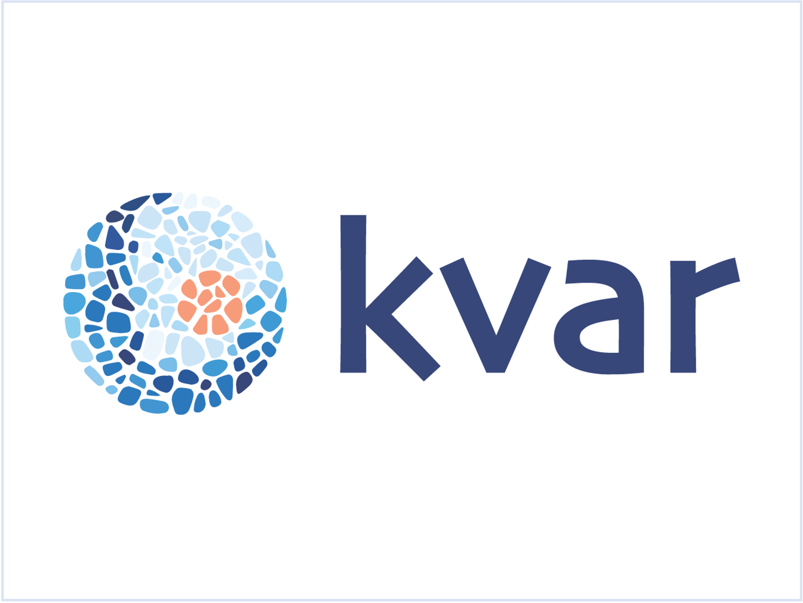

About Me
ML engineer with roots in computational biology, focused on bridging research and production systems. I design and validate traditional machine learning and deep learning models, build experimentation frameworks, and ship low-latency inference pipelines. At Microsoft Azure, I work at the intersection of modeling and distributed systems on Resource Central, the central ML platform in the control plane, serving all regions and handling more than 1 million requests per day.
New York City, NY
Featured Publications
View AllWork Experience
Microsoft Azure
New York, NYLed a cross-functional effort to move Azure from uniform to per-VM oversubscription by predicting VM CPU utilization at creation time, a cold-start problem with no usage history. Built a LightGBM quantile regression model with a tunable risk-capacity tradeoff, maintaining ≤1% under-prediction and a 10 ms inference SLO in online performance tracking. Integrated predictions across systems into the Azure scheduler and business logic, owning the full lifecycle from modeling and production inference to capacity-saving decisions.
Cut regional capacity mitigation time from ~1 week to ~4 hours across 50+ regions and ~1M VMs/containers, with zero customer impact, by building a telemetry-driven mitigation system; earned Azure Core Impact and Builders Excellence awards. Architected a distributed framework for automated A/B and shadow evaluation of candidate ML models across Resource Central; patent filed.
Drove platform-wide changes that improved Azure server-packing efficiency through intelligent, safe overpacking of internal workloads. The project required forecasting fleet-wide impact from historical signals to balance expected savings against operational risk, followed by staged production validation and pipelines to measure realized savings for senior leadership.
Medtronic
Boulder, CODeveloped a real-time LSTM pose estimator from fiber-optic sensor streams for surgical catheter tracking, and shipped the full production Python software stack for an autonomous catheter robot including real-time control, telemetry, and failure-safe behaviors that passed regulatory-readiness review.
Software / Projects

EnrichSeq
A bioinformatics pipeline for phage enrichment analysis.
Python / Nextflow / BashPhageBox
Embedded system for bacteriophage research automation.
C/C++PhageScanner
A reconfigurable machine learning pipeline for labeling ORFs/proteins in bacteriophage genomes and metagenomic data.
PythonPhageFilter
PhageFilter uses a Sequence Bloom Tree (SBT) to filter bacteriophage reads from metagenomic files.
Rust
Metscale
MetScale performs metagenome comparison estimates, taxonomic classifications, and functional predictions on metagenomic data
Snakemake / Python
SeqScreen
SeqScreen sensitively assigns taxonomic classifications and functional annotations to short and long (ont) DNA sequences.
Python / Bash / Nextflow
Kvar
A pipeline for finding disease-associated kmers in genomic data
Bash / Python / R